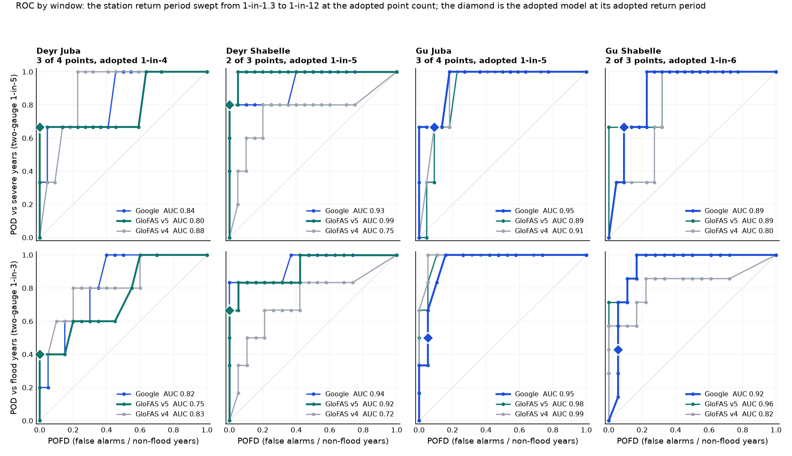
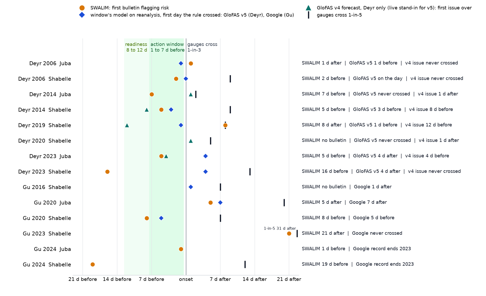

0The trigger
Two rivers, two rainy seasons, four windows. Each window runs on one forecast source and one rule. Any one window activating releases the full allocation.
| Window | Season | Source | Rule | Gauges |
|---|---|---|---|---|
| Deyr Juba | October to December | GloFAS | 3 of 4 gauges forecast over their own 1-in-4 level on the same day | Dollow, Luuq, Bardheere, Bualle |
| Deyr Shabelle | October to December | GloFAS | 2 of 3 gauges forecast over their own 1-in-4 level on the same day | Belet Weyne, Bulo Burti, Jowhar |
| Gu Juba | March to May | Google Flood Hub | 3 of 4 gauges forecast over their own 1-in-5 level on the same day | Dollow, Luuq, Bardheere, Bualle |
| Gu Shabelle | March to May | Google Flood Hub | 2 of 3 gauges forecast over their own 1-in-6 level on the same day | Belet Weyne, Bulo Burti, Jowhar |
Readiness runs 8 to 12 days ahead on the GloFAS ensemble in all four windows and releases the mobilisation share; action runs 1 to 7 days ahead and releases the rest. Thresholds are fitted on each source's own record, so a model that runs high is judged against itself.
1What counts as a flood
The trigger is scored against what the rivers actually did, using the SWALIM gauge record. A river has a flood season when two of its gauges reach their own 1-in-3 level; a severe season when two reach 1-in-5. Each gauge's levels are fitted on its own record for 2000 to 2023, so the same rule means a different height at every station.
| Window | Gauges | Flood seasons | Years | Severe | Severe years |
|---|---|---|---|---|---|
| Deyr Juba | Dollow, Luuq, Bardheere, Bualle | 5 | 2006, 2008, 2014, 2017, 2023 | 3 | 2006, 2014, 2023 |
| Deyr Shabelle | Belet Weyne, Bulo Burti, Jowhar | 6 | 2006, 2008, 2014, 2019, 2020, 2023 | 5 | 2006, 2014, 2019, 2020, 2023 |
| Gu Juba | Dollow, Luuq, Bardheere, Bualle | 6 | 2005, 2010, 2016, 2018, 2020, 2023 | 3 | 2018, 2020, 2023 |
| Gu Shabelle | Belet Weyne, Bulo Burti, Jowhar | 7 | 2003, 2005, 2010, 2016, 2018, 2020, 2023 | 3 | 2016, 2020, 2023 |
Across both rivers: 12 flood years and 7 severe years (2006, 2014, 2016, 2018, 2019, 2020, 2023). Two limits of this benchmark are worth knowing. Gauges are capped at bank full, so the largest floods all record the same reading. And a season in which only one gauge crosses does not count, even when that gauge was at bank full (Gu 2021 at Belet Weyne).

2The candidate forecasts
Three global river-flow models publish forecasts for these rivers. Each was tested on its own historical record.
| Model | Record used to set thresholds | Forecast archive for testing lead time | Live today |
|---|---|---|---|
| Google Flood Hub | Retrospective run, 1999 to 2023 | Reforecast, 2016 to mid-2023, leads 1 to 7 days | Forecasts exist; no API access yet |
| GloFAS | Version 5 reanalysis, 1999 to 2023 | Version 4 reforecast, 2003 to 2023, 11-member ensemble; version 5 has no forecast archive | Version 4 forecast, daily |
| GEOGloWS | Retrospective run, 1999 to 2023 | None before July 2024 | Forecasts exist |
GEOGloWS runs 4 to 10 times too high on the Shabelle and at Luuq and has no archive to test at lead time, so it drops out at step 4. GloFAS version 5 is the calibration record for Deyr; because it has no forecast, version 4 is what runs live and is what the lead-time tests use.
3Which model tracks each river in flood seasons
For each gauge, only the seasons in which it reached its own 1-in-3 level are kept, and each model's peak in those seasons is ranked against the gauge's. A value of 1 means the model orders the flood seasons exactly as the river did; 0 means no relation.
| Window | Google Flood Hub | GloFAS v5 | GloFAS v4 | Flood seasons per gauge |
|---|---|---|---|---|
| Deyr Juba | 0.36 | 0.32 | 0.63 | 2 to 8 |
| Deyr Shabelle | 0.67 | 0.77 | 0.00 | 6 to 10 |
| Gu Juba | 0.50 | -0.48 | 0.05 | 3 to 7 |
| Gu Shabelle | 0.08 | 0.04 | -0.49 | 7 to 8 |

Pooled over all gauges the medians are Google Flood Hub 0.43, GloFAS v5 0.21 and GloFAS v4 0.03. Two cautions. Each gauge has 4 to 10 flood seasons, so a single season moves these values a lot. And every model reads near zero on the Shabelle in Gu because the gauge is capped at bank full in the largest floods: Belet Weyne reads 8.3 m for weeks, so no ordering of severity remains for a model to match. That is a limit of the record, not evidence against the models.
A second check on the same question: the chosen source's daily flow leads the gauge at every one of the 14 station-seasons, by 0 to 7 days at the best fit. It never trails.
4Which model catches the floods at the window's rule
Correlation makes the shortlist; this step picks the model. Each window's rule is run on each model's own record with thresholds fitted on that record, and scored against the severe seasons from step 1.
| Window | Model | Severe caught | Activations with no flood | AUC | Activation years |
|---|---|---|---|---|---|
| Deyr Juba | Google Flood Hub | 2 of 3 | 3 | 0.84 | 2006, 2013, 2015, 2019, 2023 |
| GloFAS v5 | 2 of 3 | 0 | 0.80 | 2006, 2023 | |
| GloFAS v4 | 2 of 3 | 3 | 0.88 | 2001, 2005, 2014, 2015, 2017, 2023 | |
| Deyr Shabelle | Google Flood Hub | 4 of 5 | 1 | 0.93 | 2006, 2008, 2013, 2014, 2019, 2023 |
| GloFAS v5 | 5 of 5 | 1 | 0.99 | 2006, 2013, 2014, 2019, 2020, 2023 | |
| GloFAS v4 | 3 of 5 | 3 | 0.75 | 2007, 2010, 2013, 2014, 2019, 2020 | |
| Gu Juba | Google Flood Hub | 2 of 3 | 1 | 0.95 | 2013, 2016, 2018, 2020 |
| GloFAS v5 | 2 of 3 | 0 | 0.89 | 2010, 2016, 2018, 2020 | |
| GloFAS v4 | 2 of 3 | 0 | 0.91 | 2005, 2010, 2018, 2020 | |
| Gu Shabelle | Google Flood Hub | 2 of 3 | 1 | 0.89 | 2013, 2016, 2018, 2020 |
| GloFAS v5 | 2 of 3 | 0 | 0.89 | 2005, 2016, 2018, 2020 | |
| GloFAS v4 | 1 of 3 | 0 | 0.80 | 2005, 2010, 2016, 2018 |

In Gu, Google Flood Hub is chosen: it matches GloFAS v5 on severe seasons caught, and it is the only Gu candidate with a forecast archive (step 6). In Deyr, GloFAS is chosen: Google over-activates on the Juba (three activations with no flood) and misses the Shabelle in 2020, while GloFAS v5's Deyr record is clean. GloFAS v4 is the weakest option in Gu on the Shabelle, catching one severe season of three.
5Setting the rule and the return period
Every threshold sits at 1-in-3 or rarer. The vote count and return period per window were chosen so that the whole mechanism activates about once in three years while still catching every severe season.
| Window | Source | Rule | Threshold | Activations, 25 years | Return period | Years |
|---|---|---|---|---|---|---|
| Deyr Juba | GloFAS | 3 of 4 | 1-in-4 | 2 | 1-in-13.0 | 2006, 2023 |
| Deyr Shabelle | GloFAS | 2 of 3 | 1-in-4 | 6 | 1-in-4.3 | 2006, 2013, 2014, 2019, 2020, 2023 |
| Gu Juba | Google Flood Hub | 3 of 4 | 1-in-5 | 4 | 1-in-6.5 | 2013, 2016, 2018, 2020 |
| Gu Shabelle | Google Flood Hub | 2 of 3 | 1-in-6 | 4 | 1-in-6.5 | 2013, 2016, 2018, 2020 |
| Either window, Juba | 6 | 1-in-4.3 | 2006, 2013, 2016, 2018, 2020, 2023 | |||
| Either window, Shabelle | 8 | 1-in-3.2 | 2006, 2013, 2014, 2016, 2018, 2019, 2020, 2023 | |||
| Whole mechanism | 8 | 1-in-3.2 | 2006, 2013, 2014, 2016, 2018, 2019, 2020, 2023 |

Return periods use the Weibull convention, (years + 1) divided by activations. Each window holds three to five severe seasons: every difference on this page is a one- or two-event difference.
6Checked on the forecasts
Steps 3 to 5 use each model's record of the past. A trigger runs on forecasts, so the last test replays the historical forecasts and asks on what day the alert would have gone out, at lead times of 1 to 7 days, against the day the flood began at the gauges. Either river counts, since any one window releases the full allocation. Only Google Flood Hub and GloFAS v4 have forecast archives.

| Season | River(s) that flooded | Flood began | Google Flood Hub forecast | GloFAS v4 forecast | First |
|---|---|---|---|---|---|
| Deyr 2006 * | Juba and Shabelle | 30 Oct | no archive | never crossed | |
| Deyr 2008 | Juba and Shabelle | 15 Nov | no archive | never crossed | |
| Deyr 2014 * | Juba and Shabelle | 20 Oct | no archive | 13 d beforeShabelle, 7 Oct | |
| Deyr 2017 | Juba | 7 Nov | never crossed | 19 d beforeJuba, 19 Oct | GloFAS v4 |
| Deyr 2019 * | Shabelle | 14 Oct | 12 d beforeShabelle, 2 Oct | 12 d beforeShabelle, 2 Oct | tie |
| Deyr 2020 * | Shabelle | 1 Oct | never crossed | 1 d afterShabelle, 2 Oct | GloFAS v4 |
| Deyr 2023 * | Juba and Shabelle | 25 Oct | never crossed | 4 d beforeJuba, 21 Oct | GloFAS v4 |
| Gu 2003 | Shabelle | 11 May | no archive | never crossed | |
| Gu 2005 | Juba and Shabelle | 12 May | no archive | 6 d afterShabelle, 18 May | |
| Gu 2010 | Juba and Shabelle | 18 May | no archive | 7 d beforeShabelle, 11 May | |
| Gu 2016 * | Juba and Shabelle | 1 May | 1 d beforeShabelle, 30 Apr | 7 d afterShabelle, 8 May | |
| Gu 2018 * | Juba and Shabelle | 17 Apr | 2 d beforeJuba, 15 Apr | 17 d afterJuba, 4 May | |
| Gu 2020 * | Juba and Shabelle | 22 Apr | same dayShabelle, 22 Apr | 9 d afterJuba, 1 May | |
| Gu 2023 * | Juba and Shabelle | 25 Mar | 32 d afterShabelle, 26 Apr | never crossed | |
| Gu 2024 * | Juba and Shabelle | 8 May | no archive | 3 d beforeJuba, 5 May |
Deyr: GloFAS v4 activated before the flood in 4 of 7 seasons and was first in 3 of the 4 both archives cover. Gu: Google was first in 4 of 4, and on the Shabelle gave 10 to 13 days of warning in three of four seasons where GloFAS v4 gave 3 days once and nothing in the other three. The lead-time evidence and the calibration choice were made independently and point the same way: Google in Gu, GloFAS in Deyr. Gu 2024 uses the operational GloFAS forecasts; Google has no record for it.
7Against SWALIM's own alerts
SWALIM issues flood risk bulletins from the gauge readings and the rainfall outlook. For every flood season with a bulletin, the date of SWALIM's first flag is set against the first day the window's source crossed on its own record.
| Season | River | SWALIM first bulletin | Source first crossed | Who was first |
|---|---|---|---|---|
| Deyr 2006 | Juba | 2006-10-31 | 2006-10-29 | GloFAS v5 2 d before SWALIM |
| Deyr 2006 | Shabelle | 2006-10-31 | 2006-11-02 | SWALIM 2 d before GloFAS v5 |
| Deyr 2014 | Juba | 2014-10-15 | never crossed | SWALIM only; GloFAS v5 never crossed |
| Deyr 2014 | Shabelle | 2014-10-15 | 2014-10-16 | SWALIM 1 d before GloFAS v5 |
| Deyr 2019 | Juba | 2019-10-22 | never crossed | SWALIM only; GloFAS v5 never crossed |
| Deyr 2019 | Shabelle | 2019-10-22 | 2019-10-11 | GloFAS v5 11 d before SWALIM |
| Deyr 2020 | Shabelle | 2020-09-08 | 2020-10-10 | no bulletin for the October rise |
| Deyr 2023 | Juba | 2023-10-20 | 2023-10-29 | SWALIM 9 d before GloFAS v5 |
| Deyr 2023 | Shabelle | 2023-10-21 | 2023-11-09 | SWALIM 19 d before GloFAS v5 |
| Gu 2016 | Shabelle | no bulletin | 2016-05-12 | no SWALIM bulletin; Google 12 May |
| Gu 2020 | Juba | 2020-04-27 | 2020-04-29 | SWALIM 2 d before Google |
| Gu 2020 | Shabelle | 2020-04-27 | 2020-04-30 | SWALIM 3 d before Google |
| Gu 2021 | Juba | 2021-05-10 | never crossed | SWALIM only; Google never crossed |
| Gu 2021 | Shabelle | 2021-05-10 | never crossed | SWALIM only; Google never crossed |
| Gu 2023 | Shabelle | 2023-05-08 | never crossed | SWALIM only; Google never crossed |
| Gu 2024 | Juba | 2024-05-09 | n/a | Google record ends 2023 |
| Gu 2024 | Shabelle | 2024-04-19 | n/a | Google record ends 2023 |

Where both flagged, SWALIM was first in 6 of 8 seasons, and in 5 seasons only SWALIM flagged. SWALIM's alerts are forward-looking and often early, so they sit in the readiness phase. They cannot carry the action phase: CERF requires an activation basis that can be backtested, and the bulletins are expert judgement issued when the analysts see the risk rather than by a fixed rule.
8Readiness and the fail-safe
Readiness activates when SWALIM issues a moderate flood risk alert for either river, or when the GloFAS ensemble gives a 50% probability of exceeding the window's threshold at the required gauges within 8 to 12 days. It releases the mobilisation share only.
If every forecast misses, a gauge reaching bank full is the fail-safe. On the record it would have activated in these seasons with no forecast activation:
| Window | Year | Gauge at bank full | Benchmark |
|---|---|---|---|
| Deyr Shabelle | 2015 | Jowhar, 25 Oct | not a flood on two gauges |
| Gu Shabelle | 2015 | Jowhar, 20 Apr | not a flood on two gauges |
| Gu Shabelle | 2021 | Belet Weyne, 26 May | not a flood on two gauges |
| Gu Shabelle | 2023 | Belet Weyne, 9 May | severe |
Where a forecast also activated, bank full came 3 to 14 days later in all 6 cases: it adds coverage, never lead time. Juba gauges never read bank full in Gu, so the fail-safe cannot help there.
9What runs live, and what is still open
- GloFAS version 4 runs both phases today. Deyr is calibrated on version 5, which has no published forecast yet; Gu on Google Flood Hub, to which there is no API access yet. Version 4 stands in with levels refitted on its own record. Both substitutions are declared.
- Two gauges have stopped reporting. Bardheere from 30 November 2023, Bualle from 14 March 2024. Both are needed to keep a non-unanimous rule on the Juba.
- Samples are small. The design is defensible because several independent tests point the same way, not because any single number is decisive.
- Impact years are not yet defined. The benchmark is gauge levels, not people affected. 2013 (activation, no gauge flood, major flood in the SWALIM and WFP records) and 2021 (bank full at one gauge, 400,000 affected, no activation) are why an impact cross-check is the next step.